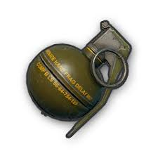
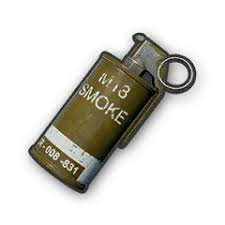
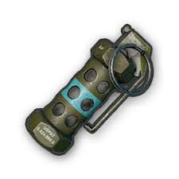

Frag-Grenade

While pressing and instantly releasing is the most secure way to throw a frag grenade in PUBG, holding it for about 3 seconds after pulling the pin will make reacting to the grenade much harder for your enemies. Grenade will explode 5 seconds after ready delay.
Smoke-Grenade

Smoke grenades are a throwable device packed with a mixture of potassium chlorate, lactose, and typically a dye for signalling. The chemicals mix with air to create a smoke screen that temporarily removes battlefield awareness.
Stun-Grenade

As the name suggests, the stun grenade disables the enemy's senses with a loud sound explosion. This is perfect for those situations when the enemy knows your presence through the sound of the footsteps but is out of the line of sight.